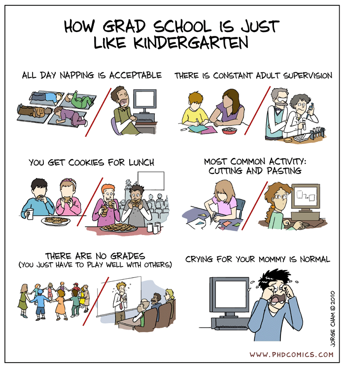

PHYS 4604 · Lecture 8
2026-10-16

Copyright © 2010 by Jorge Cham · Source: (Cham 2010)
| What | When | Points |
|---|---|---|
| NSF GRFP reference letters | Oct. 16 (today), 8:00 PM ET | – |
| NSF GRFP deadline – Physics & Astronomy | Oct. 23, 8:00 PM ET | – |
| Astrophysics/Astro Graduate Q&A (Room CCB 103) | Nov. 12, 3:30–4:30 PM ET | – |
| Personal statement or cover letter | Nov. 20, 11:59 PM ET | 15% |
The goal of today’s lecture: leave with the start of a program list, and a plan for who to contact.
PhD abroad: in much of Europe a master’s comes first, then a 3–5 year PhD, often a paid position with a named supervisor (e.g., Germany, the Netherlands). UK research-council funding for international students is capped at 30% of awards.
Also consider engineering, materials science, optics, medical physics, and astronomy.
For Physics, Applied Physics, and Astrophysics majors.
Scheller College of Business; open to all College of Sciences majors.
Finish the M.S. within two years of your B.S. for shared credits to count. Undergraduate scholarships do not cover the M.S. year.
Primary support, first-year physics grad students
| Source | Share |
|---|---|
| Teaching assistantship | 64% |
| Fellowship (e.g., NSF GRFP) | 18% |
| Research assistantship | 9% |
A PhD offer should include a tuition waiver and a stipend. If yours doesn’t, ask.
Survey years 2014–15 and 2015–16 · (Mulvey et al. 2019)
Fall 2025 first-year enrollment, PhD departments
Fall 2026 and 2027 offers
Meanwhile, a record 2,067 physics PhDs were conferred in 2024–25.
The international picture is depressed, domestic is similar to prior years.
Most large U.S. physics programs.
Many smaller or niche programs, interdisciplinary and applied programs, and most PhDs abroad.
Check each program’s website: “apply to the department” or “contact faculty first”?
You are betting on a department, not a person.
At a small program, one faculty member saying “I want this student” can decide your admission.
Subject: Prospective PhD student, Fall 2027
Dear Prof. Lastname,
I am a senior in physics at Georgia Tech,
working with Prof. X on [project]. I read
your 2025 paper on [topic] and am interested
in [specific open question].
I am applying to [Univ.] for Fall 2027. Are
you taking new students? CV attached.
Thank you, [Name]Keep it short: under 150 words, one person at a time, no mass emails.
Questions to ask, by email, at visits, or in year one:
Written by you
From others
Sometimes
Next week: how to write each piece.
| When | What |
|---|---|
| Sept.–Oct. | Build your list; GRFP; ask letter writers (≥ 4 weeks ahead) |
| Oct.–Nov. | Contact faculty; last fall Physics GRE window is Oct. 19–Nov. 1 |
| Dec. 1–Jan. 15 | Most deadlines |
| Jan.–Mar. | Interviews, offers, and visit weekends |
| Apr. 15 | Decision date for funded offers |
No program can make you accept a funded offer before April 15. Use the time to visit and compare.
Fees (domestic / international)
How many
Apply only where you would actually go.
PHYS 4604 · Fall 2026 · Georgia Institute of Technology